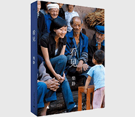

看见

| 作者: 柴静 著 | 开本: 16开 |
| 出版社: 广西师范大学出版社 | 纸张: 胶版纸 |
| 出版时间: 2013-01 | 页数: 424页 |
| 版次: 1 | 字数: 230千字 |
| ISBN: 9787549529322 | 定价: 39.80 |
| 分类: 文学 | 装帧: 平装 |
内容简介:
《看见》是知名记者和主持人柴静讲述央视十年历程的自传性作品，既是柴静个人的成长告白书，某种程度上亦可视作中国社会十年变迁的备忘录。 十年前她被选择成为国家电视台新闻主播，却因毫无经验而遭遇挫败，非典时期成为现场记者后，现实生活犬牙交错的切肤之感，让她一点一滴脱离外在与自我的束缚，对生活与人性有了更为宽广与深厚的理解。十年之间，非典、汶川地震、两会报道、北京奥运……在每个重大事件现场，几乎都能发现柴静的身影，而如华南虎照、征地等刚性的调查报道她也多有制作。在书中，她记录下淹没在宏大叙事中的动人细节，为时代留下私人的注脚。一如既往，柴静看见并记录下新闻中给她留下强烈生命印象的个人，每个人都深嵌在世界之中，没有人可以只是一个旁观者，他人经受的，我必经受。书中记录下的人与事，是他们的生活，也是你和我的生活。
作者简介:
柴静，山西临汾人，1976年出生。 曾在湖南文艺广播电台主持“夜色温柔”，在湖南卫视主持“新青年”。 2001年进入中央电视台，先后在“时空连线”“新闻调查”“24小时”“面对面”等栏目担任主持人与记者。 现为央视一套专题节目《看见》主持人。
Copyright © 2018-2020 徐悦佳. All rights reserved.